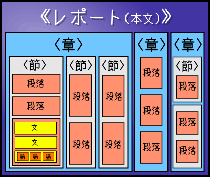
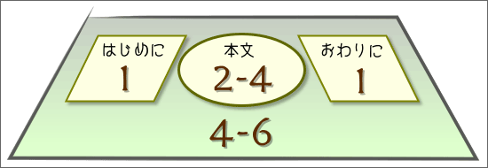
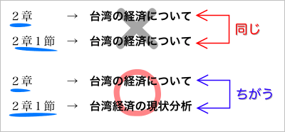
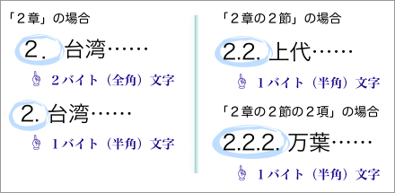
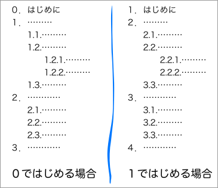
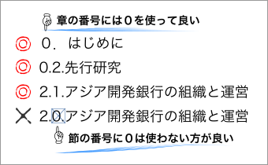

全体と部分
【レポートの構成】で述べたように、レポートでは、全体をいくつかの部分に分けて書くことになる。
章と節
一般に、レポートは、題名・本体・付属資料の３つの部分からなる。さらに、本体は、はじめに（序論）・本文（本論）・おわりに（結論）・注釈・参考文献リストの５つの部分からなる。
本体のなかで最も大きな分量を占めるのが本文（本論）である。一般に、レポートの本文（本論）は、いくつかの章や節に分けて書かれる。
なお、はじめに（序論）やおわりに（結論）は、短くまとめて記されることが多いため、１つの章として書かれるのがふつうである。
章と節との関係
レポートの本文は、いくつかの章や節に分けて書かれるが、章や節の関係は以下のようになる。

レポートの本文は、いくつかの章から構成され、章はいくつかの節から構成される。そして、節はいくつかの段落によって構成されるものである。長い論文などでは、節の下に「項」という単位が置かれることもある。なお、節がなく、段落によって直接構成される章や、ひとつの段落しか含まない節などもある。
章と節の長さ
章や節の長さに特別なきまりはないが、目安が必要ならば次のように考えればよい。
まず、レポートの場合、「はじめに」（序論）と「おわりに」（結論）は、それぞれ１章となる。「はじめに」（序論）と「おわりに」（結論）の章は節に分けないことが多い（節に分けなくても良いくらいコンパクトにまとめるということ）。

10ページくらいのレポートならば、本文（本論）は、２〜４章になるだろう。本文（本論）のそれぞれの章は、必要に応じて４つ〜５つくらいまでの節に分ければよい。なお、節は、内容のまとまりによって分けるべきものであり、必要がなければ無理に章を節に分けなくても構わない。
見出しの付け方
章や節には、見出しを付けるようにする。章や節の見出しは、内容を表わす「タイトル」を書いて、順番を示す「通し番号」を付すのがふつうである。
章や節のタイトルの付け方
まず、章や節のタイトルは簡潔であり、同時に、内容を的確に表わすものである必要がある。そのため、章や節のタイトルは、「文」の形にはしない方が良い。その方が簡潔に感じられるからである。たとえば、
日本経済はなぜ停滞しているのか？
と「文」の形で書くよりも、
日本経済停滞の理由
のようにした方が良いのである。
また、章や節のタイトルは１行に収まる長さが良いだろう。長すぎる見出しはわかりにくいので良くないものである。
章のタイトルと節のタイトル
章と節のタイトルはできるだけ重ならない方が良い。章の見出しと節の見出しに同じタイトルがあると紛らわしいからである。
たとえば、２章のタイトルが「台湾の経済について」で、２章の１節のタイトルも「台湾の経済について」ではとても紛らわしい。この場合は、たとえば２章の１節のタイトルを「台湾経済の現状分析」などとすれば良いだろう。
良くない例：
- ２章のタイトル→「台湾の経済について」
- ２章の１節のタイトル→「台湾の経済について」
良い例：
- ２章のタイトル→「台湾の経済について」
- ２章の１節のタイトル→「台湾経済の現状分析」

通し番号の付け方
章や節の見出しには、通し番号が付けられる。
章の通し番号
まず、章については、１章は「１」、２章は「２」のように算用数字で書き、「〜章」を省略するのが一般的である。「１章」「２章」のように「章」をつけたり、「一」「二」のように漢数字で書くことはあまりない。なお、章の通し番号では、算用数字は１バイト文字（半角文字）でも、２バイト文字（全角文字）でもかまわない。また、章の通し番号には、「Ⅰ」「Ⅱ」「Ⅲ」……のように（大文字の）ローマ数字を使うこともある。

章のタイトルは、章を表わす数字に続けて書く。数字と章のタイトルの間はスペース（空白）またはピリオド（．）で区切る（読点「、」や句点「。」、ナカグロ「・」などは区切りに使えないので注意すること）。
１ 地球温暖化防止制度の設立
１．地球温暖化防止制度の設立
Ⅲ 京都議定書とアメリカの一国主義
Ⅲ．京都議定書とアメリカの一国主義
章の通し番号のはじめ方
なお、章の通し番号のはじめ方には、次の２つがある。
- 序論（「はじめに」）を「１(章)」として、以下「２(章)」「３(章)」とする
- 序論（「はじめに」）を「０(章)」として、以下「１(章)」「２(章)」とする

特にきまりがない場合は、どちらの書き方でもかまわない。「章番号は１からはじめること」のようなきまりがあれば、序論を「１(章)」としなければならない。
節の通し番号
次に、節については、１章１節ならば「1.1」または「1-1」、２章２節ならば「2.2」または「2-2」のように、章と節をピリオド（．）あるいはハイフン（-）で区切って書く。なお、節の通し番号は２桁以上になるため、算用数字は１バイト文字（半角文字）にするのが一般的である。この場合も「〜章」や「〜節」は省略される。
章の場合と同様に、算用数字とタイトルの間はスペース（空白）またはピリオド（．）で区切る。
2.1 地球環境保護に関する国際条約
2.1. 地球環境保護に関する国際条約
節の下に「項」を置く場合は、「1.3.2」のようになることがある。これは、「１章３節２項」を示している。レポートでは、数字は多くても３桁まで（「項」まで）にすべきである（ただし、学術論文などでは４桁になることがある）。「1.3.2.1.1」のように細かく区切りすぎてはいけない。
節の通し番号のはじめ方
節の通し番号は、「１」からはじめる。章の通し番号の場合のように「０」を使わないようにする。

見出しの書式
見出しの文字は本文の文字よりも大きめにすることが多い。コンピュータで作成する場合、本文が12ポイントならば、見出しは14ポイントくらいになるだろう。また、見出しの文字は目立つように太字やゴシック体にされることも多い。
すでに述べたように、見出しは１行に収まる長さが良いが、やむをえず２行以上にするときは、単語と単語の間で改行するようにする。単語の途中で改行しないように配置や文字の大きを工夫する。
良くない例：
日本におけるビジネス・インキュベータの現
状と課題
良い例：
日本におけるビジネス・インキュベータの
現状と課題
日本における
ビジネス・インキュベータの現状と課題